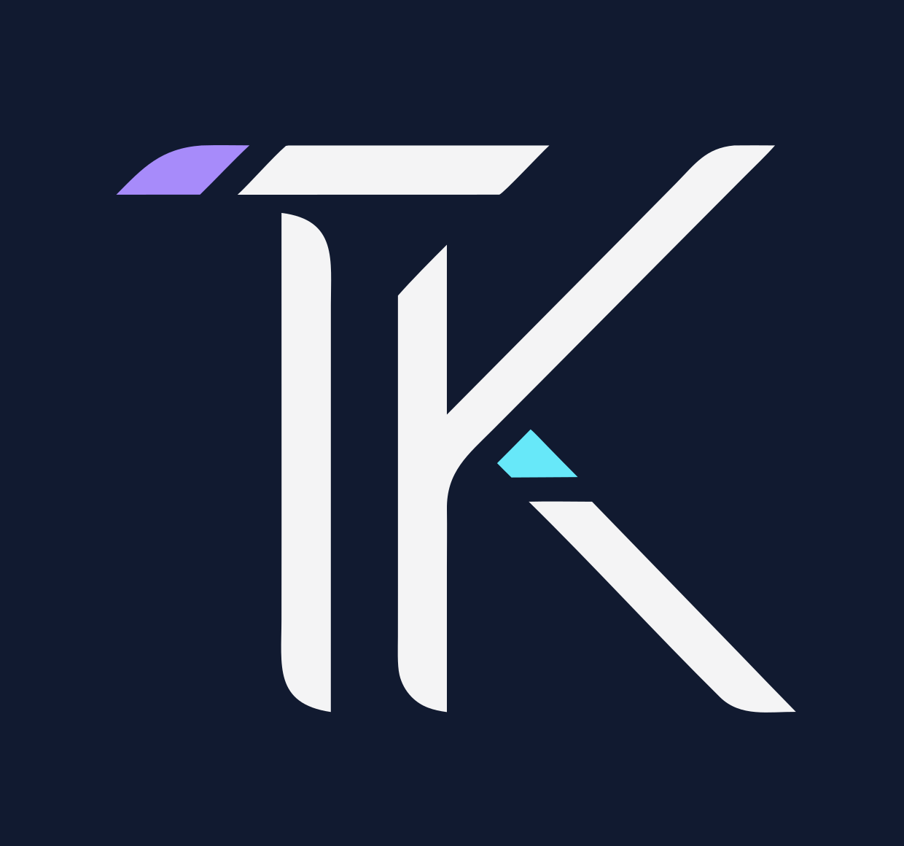

TabbyGuard: Evidence-Driven Frontend QA
Released browser-based frontend QA as a GitHub Action and npm CLI, with screenshots, accessibility checks, Playwright traces and reviewable HTML reports.

Explore published developer tools, responsive frontend projects, synthetic healthcare workflow demos, accessible interfaces, client websites and human-reviewed AI engineering experiments.
Main portfolio · GitHub · LinkedIn · Email
Released browser-based frontend QA as a GitHub Action and npm CLI, with screenshots, accessibility checks, Playwright traces and reviewable HTML reports.
Responsive medical-practice simulation with synthetic patient, scheduling and billing records, data-derived charts and accessibility-focused dashboard UX.
Explore MedOps Practice Studio | Medical Operations Dashboard
Compared parallel AI-assisted development of analytics and filtered CSV export in a Next.js test project, with human review and independent CI.
Local-first Windows assistant combining speech recognition, Ollama-backed models, desktop commands and a browser dashboard.
Published JavaScript weather and outfit planner using Open-Meteo forecasts, seven-day planning, illustrated clothing suggestions and responsive interactions.
Desktop RCM control-tower concept with synthetic eligibility, claims, clinical-coding and denial-resolution workflow demonstrations.
Interactive guide to healthcare data annotation, Find-Resolve-Label review cycles, STAPLE-style consensus concepts, redaction and drift detection.
Interactive revenue-cycle dashboard showing synthetic KPI trends, denial categories, AR aging and payer-focused analytics.
Healthcare coordination platform demo with role-specific workflows, claims analytics, authorization screens, RBAC concepts and audit logging.
Guided medical coding and billing workflow simulator with mock code searches, superbills, claim previews and denial-risk concepts.
Workflow for turning voice notes and meeting transcripts into reviewed tasks and subtasks, with Asana API synchronization concepts.
Browser-based family planner with calendars, routines, shopping lists, chores and rewards; data is saved locally and can be backed up manually.
Responsive nonprofit site with member pathways, events, career resources and maintainable frontend release practices.
Explore Accountability & Hopeful Fridays | Nonprofit Website
Multi-page well-being website featuring services, resources, workplace support information and clear contact pathways.
Artisan belt website with product photography, a customization flow, measurement guidance, image galleries and inquiry-led orders.
Responsive learning website bringing together original children's books, free printable activities and guided crafts with accessible content pages.